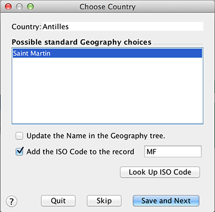
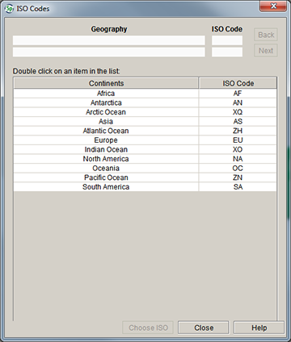
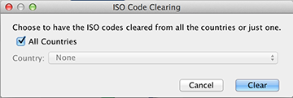

The Institutional Organization for Standardization (ISO) has assigned unique codes for political boundries. The new Specify Insight iPad application utilizes these codes when summarizing and displaying geographical data, and it is the first necessary step in exporting data for Specify Insight. Without proper ISO Codes the information displayed within Specify Insight will not be complete or possibly correct.
The ISO tool displays the geographical codes from within the Specify geography tree, and geography trees are shared by Discipline; hence the updates made while using the ISO Assignment tool can be completed for any Collection within a Discipline.
The ISO Assignment tool is opened by clicking: System > ISO Tools.
The sidebar offers three actions:
Specify utilizes the geographic information provided by geonames.org to automatically match the standardized names of Continents, Countries and US States within the geography tree with the standard ISO code.
Any political boundries that exist within the geography tree that are not standard names must be assigned ISO codes. This also makes the ISO Assignment Tool a good way to find political boundary names that are misspelled or not consistent within the geography tree. For example, if 'United States' has been entered as 'US', 'USA' and 'United States' the tool will automatically assign 'United States' an ISO code, but will present 'US' and 'USA' for individual assignment.
Click Assign ISO Codes from within the sidebar to open it.
Note: If all political boundaries within the geography tree are assigned ISO codes a message will appear stating that the selected geography is up to date, and the ISO assignment tool will not open.

Assign ISO Codes
Specify will automatically assign ISO codes for all standard continent, country and US States names within the geography tree. Any non-standard names will be presented for choosing a code:
Continent/Country/State refers to rank of the political boundary not found and displays the name.
Possible Standard Geography choices offers a suggestion for the standard political boundary name.
Update the Name in the Geography tree allows the changes made within the tool to change the name in the geography tree. In the example above 'US' and 'USA' would be changed to 'United States'
Add the ISO Code to the record offers a text box for entering an ISO code and allows the ISO code to be assigned.
Look Up ISO Code allows you to step-through standard Contintent, Country and US State names to find correct ISO codes.

ISO Code Table
Double-Click on a Geography name to select it and open the next level/rank of geography.
Quit will close the ISO Code dialog and create a report of all changes
Skip will skip the current political boundary.
Save and Next saves the current ISO code and steps to the next unassigned political boundary. After the last ISO code has been assigned Specify will create a report of all changes and display it in a browser window.
This will clear all ISO codes within the geography tree for all countries or individual countries.
Click Clear ISO Codes from the sidebar menu to open the tool.

Clear ISO Codes
Check the All Countries box to clear all ISO codes within the geography tree or select a singe Country from the drop-down menu to clear only the ISO code for that country.
Note: Selecting United States from the drop-down will clear all ISO codes for the US states.
The ISO Reference displays the standard political boundary name and its ISO code referenced within Specify. It is the same ISO reference tool utilized in the ISO Assignment Tool.
Click ISO Reference from the sidebar menu to open the tool.
ISO Code Table
Double-Click on a Geography name to select it and open the next level of geography.